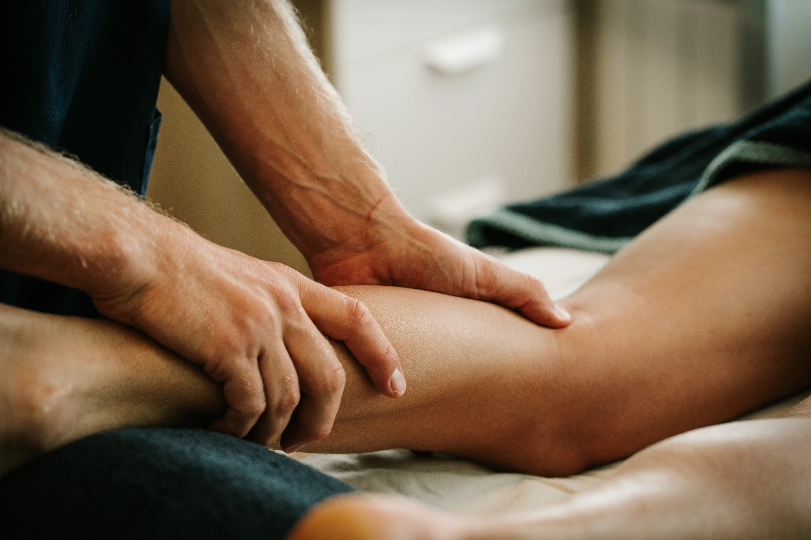

Gun jezelf een moment van rust en herstel.
Waarom kiezen voor Quirobalance?
Bij Quirobalance draait alles om persoonlijke aandacht en professionele zorg. Fernand Cools combineert jarenlange ervaring met diepgaande kennis van het menselijk lichaam.
Of je nu stress wilt verminderen, spierklachten hebt of gewoon wilt ontspannen, onze massages zijn volledig afgestemd op jouw behoeften.
Onze Visie op Welzijn
Wij geloven dat balans tussen lichaam en geest essentieel is voor een gezond en gelukkig leven. Daarom combineren we traditionele technieken met een persoonlijke aanpak.
Boek jouw massage
Ontspanningsmassage
Een zachte, rustgevende massage die stress vermindert en de doorbloeding verbetert. Ideaal om even helemaal tot rust te komen.
Dieptemassage
Gericht op het verlichten van spierpijn en spanning door diepere weefsellagen te behandelen. Perfect voor sporters en mensen met spierklachten.